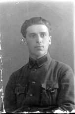
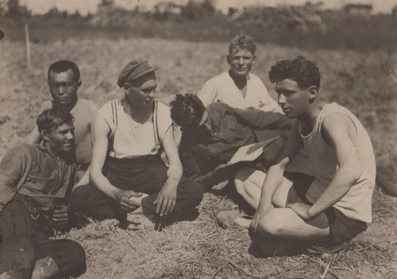
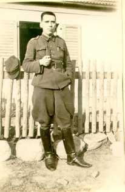
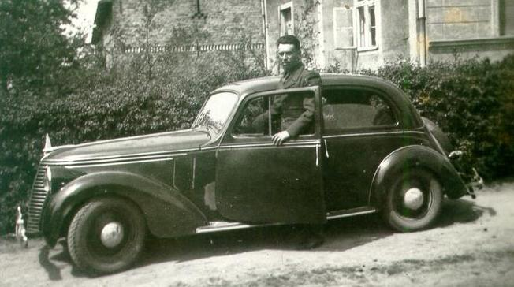
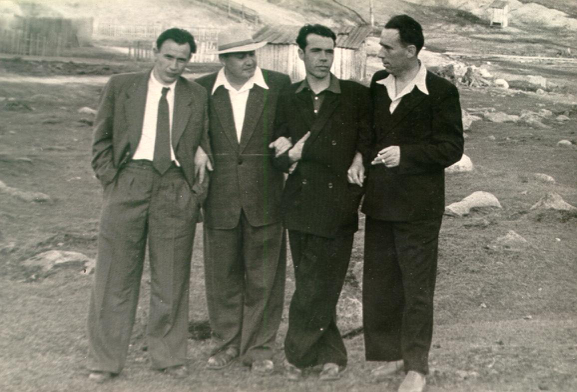
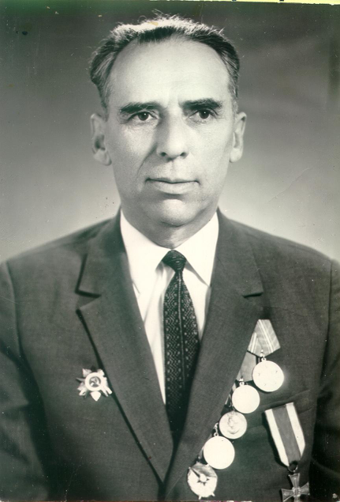
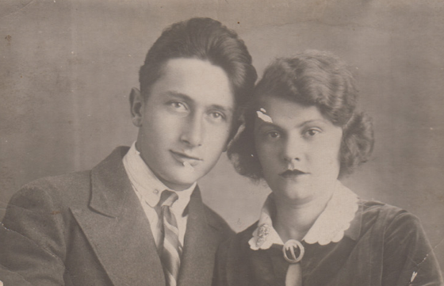
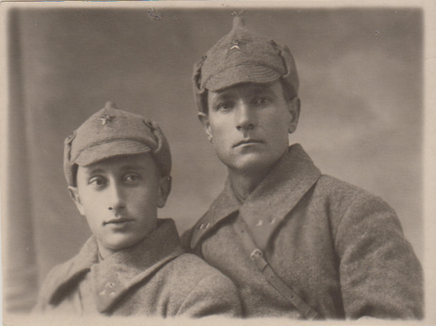
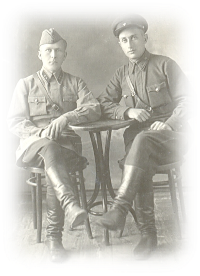
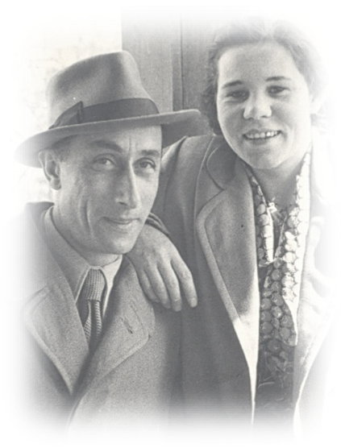

Это мои дедушка и бабушка

Басс Михаил Борисович (1885-1953), Горелик Рива Борисовна (1895-1947).
Дедушка Миша был тихий, спокойный, скромный мастер- краснодеревщик. Я помню его хорошо, он жил у нас после гибели бабушки.
Помню, как он водил меня на уколы, когда я болела малярией, и, жалея, покупал мне нехитрые сладости: стакан морса, вкус которого помню до сих пор (он был из сахарина), кулечек вафельных крошек…
А моей сестренке, когда ей исполнилось 14 лет, подарил «взрослые» (вероятно, фильдеперсовые, я тогда не разбиралась) чулки, за что получил укор от мамы…
У него был туберкулез, в то время неизлечимый, и он оберегал нас, детей, не позволяя очень близко подходить к нему. Мы же порой просто висли на его худой шее – такую доброту и ласку излучал он.
О бабушке знаю по рассказам, я плохо ее помню. Она была властной, сильной, справедливой и очень доброй. Она была из служащих (заведующая гостиницей, заведующая детскими яслями-садом).
Мне было шесть с половиной лет, когда произошел несчастный случай. Она готовила обед на примусе, а керосин, купленный на рынке, был чем-то разбавлен и вспыхнул мгновенно. Пожар потушили быстро, а бабушку врачи не спасли.
Моя мама очень тепло отзывалась о ней. Будучи рано выданной замуж, сирота, получившая строгое неласковое воспитание, мама почувствовала сердечную теплоту и поддержку в лице свекрови, пытавшейся то одеть ее получше (сама ползала по полу, раскраивая из ситца платье-солнце), то отправить ее в парк на танцы с другом сына, когда тот был в отъезде. И вообще помогала молодой семье, чем могла.
У дедушки с бабушкой было три сына (Анатолий, Яков, Артур) и дочь Дина (Динара).
Анатолий (1912-1970)

Это мой папа. Нет ни одной его детской фотографии, как и моей, кстати. Я поняла, почему. Его детство выпало на Первую мировую войну, мое – на Вторую…
Он был первенцем у своих родителей, закончил всего 7 классов. На этой фотографии (крайний справа) ему 17 лет.

Жили они в Рыбинске, а как попали в Среднюю Азию, к сожалению, не знаю. Зато знаю, почему папа очень любил лошадей: мальчишкой возился с ними много, затем служил в органах, гонялись за бандами басмачей, потом, уже будучи красноармейцем, служил в горной кавалерийской дивизии.
Когда ушел из органов, был на комсомольской работе (секретарем райкома), затем служил в банке. От участия в финской войне его отвел случай: военком, подписывая документы, спросил, как дела дома, в семье (они были знакомы), и, узнав, что жена находится в роддоме в ожидании третьего ребенка, не поставил свою подпись, сказав, что место папаши - под окнами роддома, а не в строю.
Великая Отечественная война завершила становление личности моего папы. Когда смотрю его документы, поражаюсь его стремительному росту – от красноармейца до зам. командира полка…

Его не отпускали из Армии, оставляя служить в Польше, предлагали службу в Москве, но мама категорически отказалась выезжать из Актюбинска, и папа вынужден был демобилизоваться.

После войны папа работал в геологии, и наша семья меняла место жительства в соответствии с его продвижением по служебной лестнице – от Северного Казахстана до Северного Урала (начальник геологоразведочной экспедиции).

С детства помню уважение к папе и друзей, и подчиненных. Он был душой компании, считался самым образованным, эрудированным и остроумным человеком. И он действительно был таким. Он сделал себя таким благодаря широте интересов и постоянному самообразованию. Честно признаюсь, со своим высшим филологическим образованием я не раз чувствовала себя рядом с ним полной невеждой, хотя он получил свидетельство об окончании средней школы чуть-чуть раньше нас, дочерей.
Я всегда ощущала его любовь и поддержку: и в детстве, когда лихо распевала в компании взрослых (у нас часто были гости) военные и послевоенные песни, и в юности, когда решался вопрос о работе в комсомоле (секретарем райкома). И вместе с тем, я знала, как требователен и строг он к людям. Даже представить себе невозможно, чтобы мы, дети, могли ослушаться его или не выполнить его требование. Я не могла себе позволить хоть в чем-то не сдержать данного слова или опоздать к назначенному времени возвращения домой. Это не было вызвано страхом наказания (вообще не припомню никаких наказаний, а вот запреты были). Я была просто неспособна поступить нечестно и вообще сделать что-либо неблаговидное, потому что не представляла, как смогу тогда посмотреть ему в глаза…

Он слишком рано ушел из жизни. Мне до сих пор его не хватает…
Яков (1915-2002)
Дядя Яша родился в Витебске 17 апреля 1915 г. По-моему, он имел среднее специальное образование (вроде техникума), до войны работал в строительстве.

На этой фотографии он с женой Тамарой.

Участник Великой Отечественной войны (на фотографии слева).
С семьей дяди Яши я встречалась не часто, но с моих детских лет до самой его смерти. После войны и до конца жизни известен как «главный трамвайщик» города Орска. Помню, мы только переехали из Кимперсая в Орск, вся родня собралась в крохотной комнате тети Дины, а нас с сестренкой отправили гулять. Дядя Яша предложил покататься на трамвае (для нас, выросших в степях Казахстана, огромная радость) и объяснил, чтобы на кольце, когда все выйдут из вагона, мы не выходили, дабы не потеряться и на этом же трамвае вернуться на остановку, где вошли в него, недалеко от дома.
Счастливые, мы отправились в путешествие. Оно было достаточно долгим и увлекательным. Но на кольце кондуктор, естественно, попросила нас выйти. Мы растерялись. В начале путешествия у нас был 1 рубль, 60 копеек мы истратили, купив 2 билета. Если мы сейчас выйдем, еще на 2 билета явно не хватает. Об этом мы и шептались, когда кондуктор подошла и спросила: «В чем дело?» Мы честно ответили, добавив, что дядя Яша не разрешил нам выходить из вагона. «А как фамилия вашего дяди?» - «Басс.» - Она улыбнулась: «Конечно, девочки, оставайтесь».
Не знаю, каким он был начальником (наверное, хорошим, если водитель останавливала трамвай и открывала двери посередине улицы Ленина, увидев его просто переходящим улицу), но я запомнила его очень мягким, добрым, даже сентиментальным человеком.
Со слов мамы знаю историю появления дяди Яши в 1942 году в нашей семье. Мама побежала в магазин, а нас, трех девчонок, оставила на его попечение. Вернулась быстро, но застала дядю Яшу в полной растерянности: он угостил нас шоколадом, а мы, попробовав его, так разревелись, что никакими усилиями успокоить нас он не мог. Мама успокоила прежде его, а потом достала карамельки-подушечки («дунькина радость») и тем успокоила нас.
Дядя Яша был так ошеломлен случившимся и так ярко описал это старшему брату, что вплоть до 18-летия я ВСЕГДА получала от папы в день рождения плитку шоколада…

Вот так дядя Яша выглядел 15 марта 1942 года (Ташкент) – справа.
После войны расстался с женой Тамарой, болевшей туберкулезом, и женился на Хлипковской Марии Кирилловне.

Мария Кирилловна была личностью незаурядной. Ее неуемная жажда коммерческой деятельности, уверенная хватка во всем даже в советское и постсоветское время позволяла ей проворачивать немалые дела. Можно только сожалеть, что талант этот не был востребован и не послужил более добрым и благородным целям… Жили они в Орске, имели двух сыновей. Игорь родился в 1949 году, Сергей - в 1961 (умер в 2011).
Алла Басс (Дворжицкая-Ларина)